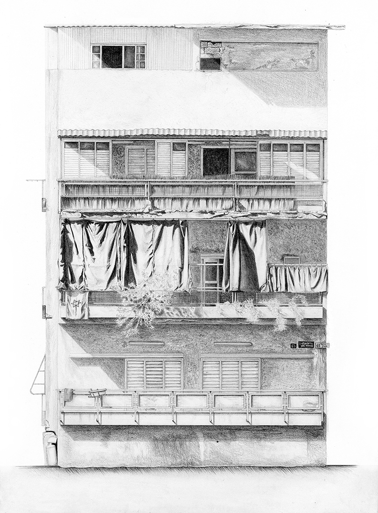
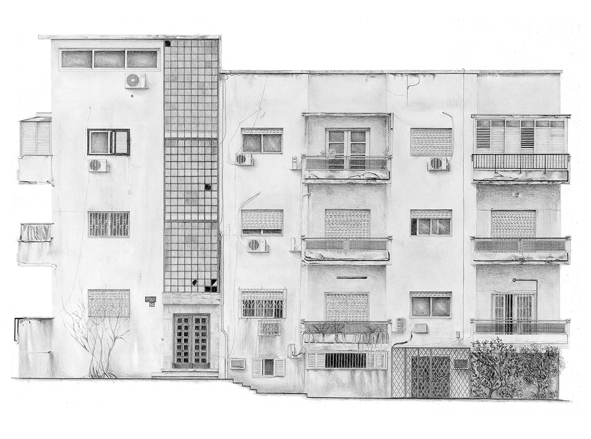
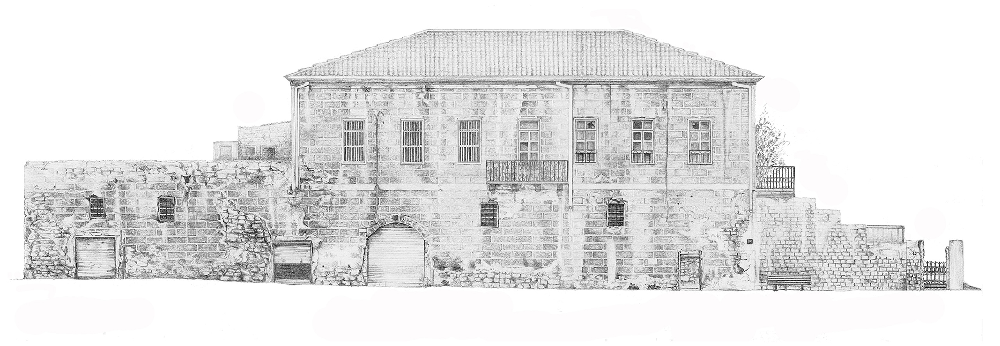
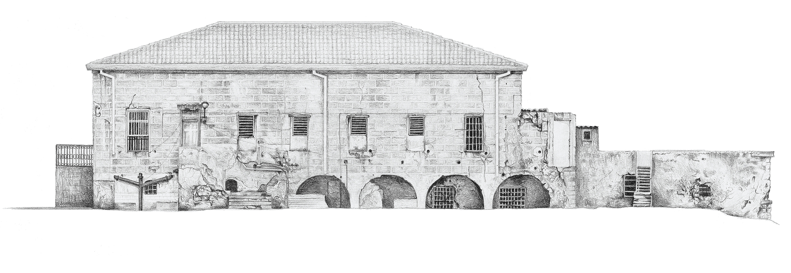
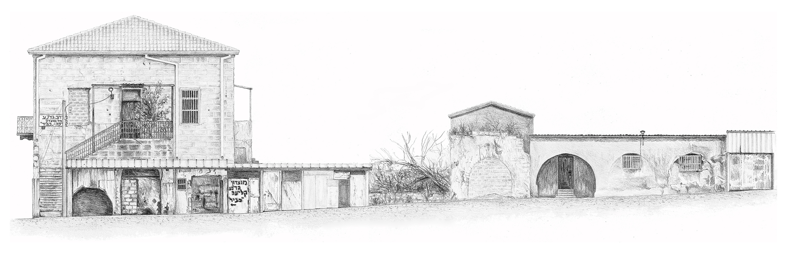
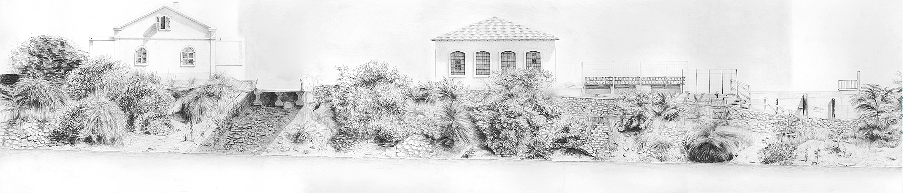
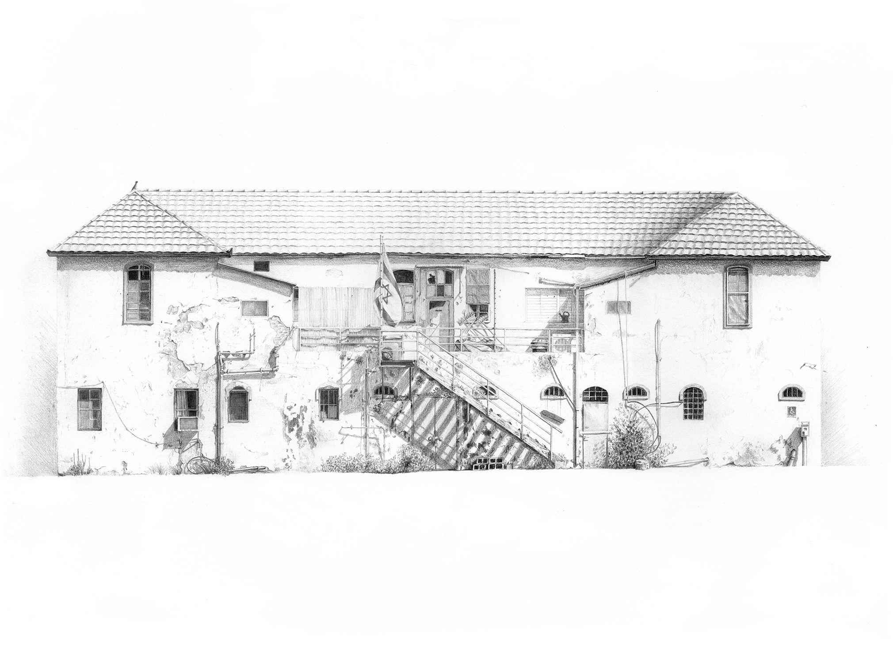
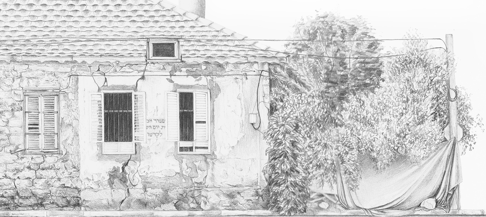
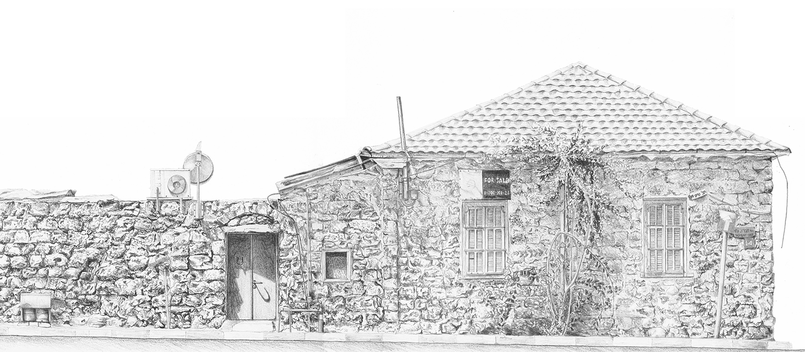
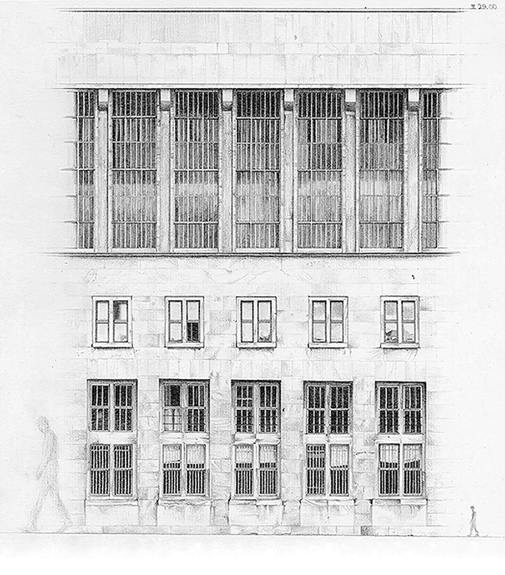

WHITE CITY | BLACK CITY
#01


Mendelsohn Street Tel Aviv, East Façade
graphite pencil on paper, 29.5X21cm
Drawing of the facade of a 1930's international-style building, located in the white
city of Tel-Aviv, depicted in its decay.
#02

Mendelsohn Street Tel Aviv, North Façade
graphite pencil on paper, 29.5X42cm
Drawing of the facade of a 1930's international-style building, located in the white
city of Tel-Aviv, depicted in its decay.
#03

Well House in Jaffa, North Façade
graphite pencil on paper, 17X50cm
Remnants of a former Jaffa mansion - one of many which were once situated in the heart
of orchards - and today are left in their ruin.
#04

Well House in Jaffa, South Façade
graphite pencil on paper, 17X50cm
Remnants of a former Jaffa mansion - one of many which were once situated in the heart
of orchards - and today are left in their ruin.
#05

Well House in Jaffa, West Façade
graphite pencil on paper, 15X50cm
Remnants of a former Jaffa mansion - one of many which were once situated in the heart
of orchards - and today are left in their ruin.
#06

Old Ottoman Railway in Jaffa
graphite pencil on paper, 20X100cm
Retaining wall of the old railway, covered with vegetation. The buildings perform as a
static scenery, the shadow of a tower hovering behind.
#07

Mikve Israel Building, South Façade
graphite pencil on paper, 29.5X40cm
#08

Hevrat Shas Street Tel Aviv, West Façade
graphite pencil on paper, 12.5X28cm
#09

Hevrat Shas Street Tel Aviv, North Façade
graphite pencil on paper, 12.5X43cm
#10 [OTHER CITY]

Point of Reference in Tempelhof, Germania
graphite pencil on paper, 30X33cm
Façade segment of the former Nazi airport Tempelhof, located in Berlin’s city center.
Architectural means of repetition and scale manipulations allude to a phantasmagoric infinite.